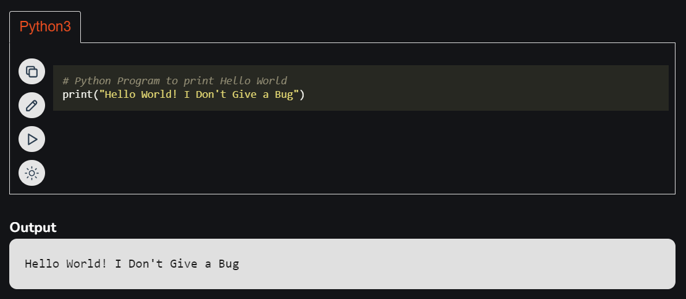

Python Tutorial | Learn Python Programming
Last Updated : 25 Jun, 2024
This Programming Language Python git checkout -- . is very well suited for beginners and also for experienced programmers. This specially designed free Python tutorial will help you learn Python programming most efficiently, with all topics from basics to advanced (like Web-scraping, Django, Learning, etc.) with examples.
What is Python?
Python is a high-level, general-purpose, and very popular programming language. Python programming language (latest Python 3) is being used in web development, and Machine Learning applications, along with all cutting-edge technology in Software Industry.... Python language is being used by almost all tech-giant companies like - Google, Amazon, Facebook, Instagram, Dropbox, Uber.Often, programmers fall in love with Python because of the increased productivity it provides. Since there is no compilation step, the edit-test-debug cycle is incredibly fast. Debugging Python programs is easy: a bug or bad input will never cause a segmentation fault. Instead, when the interpreter discovers an error, it raises an exception. When the program doesn't catch the exception, the interpreter prints a stack trace. A source level debugger allows inspection of local and global variables, evaluation of arbitrary expressions, setting breakpoints, stepping through the code a line at a time, and so on. The debugger is written in Python itself, testifying to Python's introspective power. On the other hand, often the quickest way to debug a program is to add a few print statements to the source: the fast edit-test-debug cycle makes this simple approach very effective.....
Writing your first Python Program to Learn Python Programming
There are two ways you can execute your Python program:
- First, we write a program in a file and run it one time.
- Second, run a code line by line.
Here we provided the latest Python 3 version compiler where you can edit and compile your written code directly with just one click of the RUN Button. So test yourself with Python first exercises.
Table of Content
- What is Python?
- Writing your first Python Program
- Setting up Python
- Getting Started with Python Programming
- Python Input/Output
- Python Data Types
- Python Operators
- Python Conditional Statement
- Python Loops